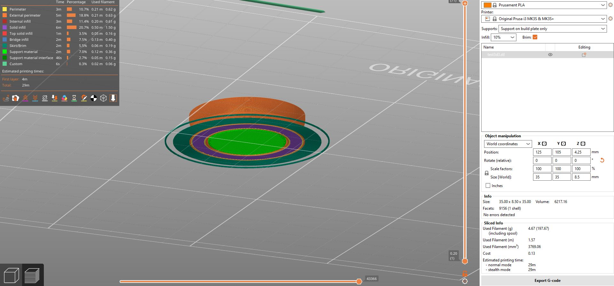

Verkefni 3
LýsingVerkefnalýsing
Einstaklingsverkefni:Hannaðu lítið módel fyrir 3D prentun sem ekki væri hægt að framkvæma með frádráttar framleiðslu (addative vs subtractive). Hannaðu og framkvæmdu prófanir á 3D prentaranum til að ákvarða hönnunar reglur og skorður áður en módelið er á endanum prentað. Útskýrðu hvað þú lærðir af ferlinu.
Prentaðu hlutinn (max 100g af plasti skv. slicer).
3D Skannaðu einhvern hlut.
Verkfæri/vélbúnaður sem nemendur hafa aðgang að:
Prusa MK3+, Creality CR-10 MAX.
Hönnunarforsendur
Það fyrsta sem ég gerði var að fara í hugmyndaleit um hvað ég vildi prenta sem uppfyllir þau skilyrði að ekki sé hægt að framleiða hlutinn með frádráttar framleiðslu. Eftir nokkra umhugsun þá ákvað ég að gera auka skákdrottningar fyrir taflborðið mitt, bæði vegna þess að þau uppfylla skilyrðin, þar sem ekki er hægt að gera alla kraga drottningarinnar með frádráttar framleiðslu og gatið að neðan, og vegna þess að það er þörf á fleiri en einni drottningu af hvorri sort í taflsetti. Ég byrjaði því á að skoða drottninguna úr mínu taflsetti og því næst mældi ég hana með reglustiku. Þegar ég var kominn með allar málsetningar þá fór ég að teikna drottninguna en það gerði ég með Autodesk Inventor. Mér fannst mikilvægt að drottningin væri þyngd á einhvern þátt fyrir aukið jafnvægi, því ákvað ég að cut-extrudea gat á stærð við 50 kr (23mm þvermál) sem ég ætlaði að líma neðst inní drottninguna.
3D prentun
Til að læra að nota prentarann og sjá hvernig gengi að prenta út hlutinn minn þá voru gerðar prufur fyrir prentunina. Ég gerði tvær prufur, annars vegar hausinn á drollunni og hins vegar botninn með 50 kr slottinu til að sjá hvort peningurinn myndi passa. Fyrir báðar prufur notaði ég Prusa MK3+ prentara og hugbúnaðinn Prusa Slicer. Til að setja drottningarhausinn inná Prusa MK3+ prentarann þá var hann fyrst exportaður úr Inventor sem CAD file nánar tiltekið sem STL file. Síðan var STL skráin dregin yfir í Prusa Slicer og valdar stillingar fyrir prentunina. Ég notaði eftirfarandi stillingar:
- Print settings: 0.15mm
- Filament: Prusament PLA
- Infill: 10%
- Brim: On
- Supports: On build plate only
Síðan exportaði ég Prusa Filenum yfir á SD kort og setti það í prentarann. Ýtt var á OK á prentaranum og prentun hófst. Prentunin tók um 36 mínútur og tókst vel. Hinsvegar þegar ég bar hausinn saman við drottninguna sem ég átti fyrir þá fannst mér hann aðeins of lítill á sumum stöðum og stækkaði hann því í Inventor. Síðan þreif ég prentborðið fyrir næsta aðila. Því næst prentaði ég út botninn á drottningunni, bæði til að sjá hvort það myndi vika að prenta út gatið undir henni og hvort 50 kr myndi passa í það. Ljóst var að ég þyrfti support fyrir gatið þar sem prentarinn getur ekki prentað í lausu lofti. Því notaðist ég við eftirfarandi stillingar:
Prentunin tók um 36 mínútur og tókst vel. Hinsvegar þegar ég bar hausinn saman við drottninguna sem ég átti fyrir þá fannst mér hann aðeins of lítill á sumum stöðum og stækkaði hann því í Inventor. Síðan þreif ég prentborðið fyrir næsta aðila. Því næst prentaði ég út botninn á drottningunni, bæði til að sjá hvort það myndi vika að prenta út gatið undir henni og hvort 50 kr myndi passa í það. Ljóst var að ég þyrfti support fyrir gatið þar sem prentarinn getur ekki prentað í lausu lofti. Því notaðist ég við eftirfarandi stillingar:
- Print settings: 0.15mm
- Filament: Prusament PLA
- Infill: 10%
- Brim: On
- Supports: On build plate only
Sem eru í rauninni sömu stillingar og áður en ég hefði líklega komist upp með no supports í hinni prufunni. Hins vegar var það krítískt í þessari prufu að hafa supports sem fylla í tóma gatið. 
Prufan var 29 mínútur að prentast og kom vel út. Til að losna við supportið þá skar ég í hringinn og togaði síðan með töngum. Eftir var gat sem 50 kr passaði í en ég hafði gatið einum millimetra meira í þvermál heldur en 50 kr og nokkrum millimetrum dýpra en þykkt peningsins. Sjá má peninginn í prufunni hér til hægri. Eftir breytingar á drottningunni eftir prufurnar þá leit hún svona út í Inventor en þetta er teiknað aðallega með hring-extrusions og filletum. Breytingar sem gerðar voru var meðal annars stærðin á báðum kúlunum efst en einnig var þvermál sumra hringja og fillet breytt.
Ég exportaði þessari skrá sem STL file og setti inná PrusaSlicerinn með sömu stillingum og áður eða:
- Print settings: 0.15mm
- Filament: Prusament PLA
- Infill: 10%
- Brim: On
- Supports: On build plate only
Þetta kom að mestu leyti vel út nema að kragi drottingarinnar var of brattur á einum stað og þyrfti því að bæta við supports fyrir kragann. Ég skar og pússaði þessa hangandi þræði og supportið í gatinu í burt og límdi loks peninginn í gatið undir henni með einangrunarlímbandi. Við gerð svörtu drollunar var reynt að komast hjá þessum hangandi þráðum en ég byrjaði á að gera drottninguna aðeins þykkari undir kraganum. Því næst var henni exportað á sama hátt og áður inní PrusaSlicer sem STL. Í PrusaSlicerinum voru sömu stillingar notaðar og áður nema fyrir supports en ég ákvað að best væri að teikna inn öll nauðsynleg support sjálfur annars vegar í gatinu og hins vegar á kraganum. Síðan var hún sliceuð, en hana má sjá með supportum hér að neðan.
Alls tók prentunin rétt rúma 2 tíma eða um 12 mínútum lengur en án supportanna. Drottningin var síðan tekin af borðinu og supportin skorin í burt. Hér að neðan má sjá útprentuðu drottninguna með supports.
og síðan má sjá drottninguna eftir að supportin voru tekin af með hníf og töngum.
Síðan var 50 kr peningur settur neðst inní hana og límt fyrir. Útkomuna má sjá hér að neðan.
3D skönnun
Skönnun
Það fyrsta sem ég gerði var að downloada Scaniverse á símann minn. Ég hafði strax hugmynd um hvað ég vildi skanna en það er stytta eftir pabba Errós, hann Guðmund frá Miðdal. Þar sem síminn minn er með Lidar skanna þá tókst skannið mjög vel í appinu en það má sjá hér. Loks var teikningin færð yfir í fusion en það var gert með því að exporta skránni sem STL og hún síðan sótt af google driveinu mínu á tölvunni minni. Þar sem styttan var með mjög fínt mesh til að byrja með átti tölvan erfitt með að höndla það. Því breytti ég meshinu í aðeins grófara mesh en það var gert með "Mesh repair -> make solid" og síðan "Reduce mesh" úr 25 niður í rúmlega 12. Því næst prófaði ég að færa styttuna yfir í PrusaSlicer en ákvað að prenta hana ekki.
Því næst gerði ég sömu skref nema fyrir gíraffa styttu sem ég skannaði en skann af henni má sjá hér. Einnig setti ég gíraffan inná Fusion og eftir að hafa notað "Scale" í Fusion til að minnka stærðina á gíraffanum exportaði ég filenum sem STL yfir á PrusaSlicer-inn en ég ákvað að prófa að prenta hann út til gamans.
Prentunin sjáf tókst vel en þar sem lappirnar voru frekar þunnar þá brotnuðu þeir af þegar ég var að losa supportin af.
Í heildina litið þá þótti mér mjög fróðlegt að sjá hversu einfalt það er að skanna hluti og færa yfir í teikniforrit til að loks prenta þá.
Heimildir og annað
Myndbönd og heimasíður sem nýttust mér
Annað